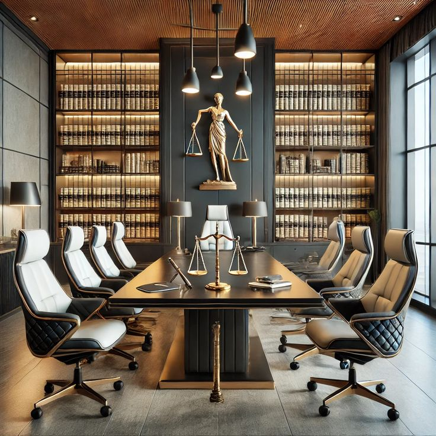

Pedro Manuel
Sócio-fundador — Direito Empresarial e Laboral
Mais de 15 anos a apoiar empresas angolanas em conformidade legal, contratos e litígios laborais.

Advocacia em Luanda desde 2011
Acompanhamos particulares e empresas em processos civis, empresariais, laborais e de família — com clareza sobre cada passo e sem linguagem incompreensível.
Marcar uma consultaO que fazemos
A nossa abordagem
Acreditamos que um bom aconselhamento jurídico começa por sermos compreendidos. Antes de qualquer decisão, explicamos as opções, os prazos e os custos envolvidos — para que decida com informação, não com receio.
Trabalhamos com um número reduzido de clientes de cada vez, para garantir atenção real a cada processo, do primeiro contacto à resolução.
Quem o vai acompanhar
Sócio-fundador — Direito Empresarial e Laboral
Mais de 15 anos a apoiar empresas angolanas em conformidade legal, contratos e litígios laborais.
Sócia-fundadora — Direito Civil e de Família
Especialista em processos sensíveis — divórcios, heranças e litígios civis — com abordagem próxima e discreta.
Do primeiro contacto à resolução
Ouvimos a sua situação, sem compromisso, e explicamos se e como podemos ajudar.
Reunimos a documentação necessária e avaliamos os cenários possíveis, com prazos e custos claros.
Apresentamos o caminho recomendado e as alternativas, para decidir em conjunto como avançar.
Mantemo-lo informado em cada etapa, até à resolução do processo.
Expliquei a minha situação uma vez e senti que percebiam mesmo o que estava em jogo. Fui acompanhado em cada etapa do processo, sem surpresas.
Num momento difícil da minha vida, tive respostas claras em vez de termos jurídicos que eu não entendia. Fez toda a diferença.
Antes de marcar
Não. A primeira conversa serve para perceber a sua situação e explicar como podemos ajudar, sem qualquer compromisso.
Sim. Grande parte do acompanhamento pode ser feito remotamente, por videochamada ou WhatsApp, com deslocações apenas quando estritamente necessário.
Depende da área e complexidade. Na consulta inicial damos sempre uma estimativa de prazo realista para o seu caso específico.
Os valores e a forma de pagamento são definidos e explicados antes de qualquer trabalho começar — sem surpresas na fatura.
A primeira conversa serve para perceber a sua situação — sem compromisso.